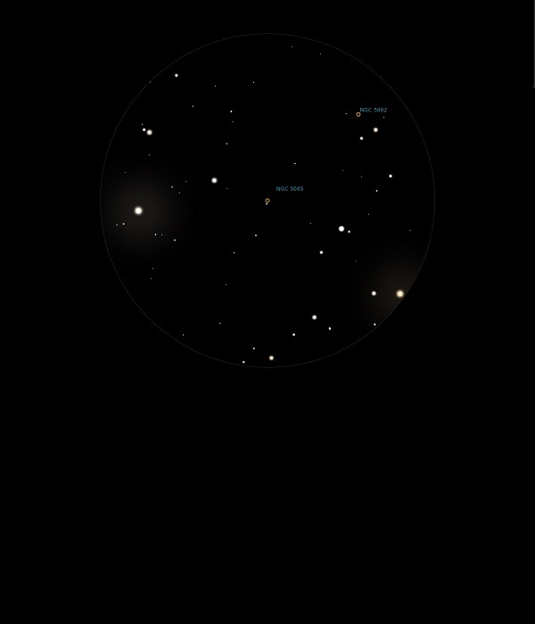

NGC 5005
Spiral Galaxy in Canes Venatici
NGC 5005
Mag 10.6
Caldwell 29
03/07/14
A particularly neat grouping of Mags 8.6, 9.0 and 10.4 stars
frame NGC 5005 which sits between them as a distinct, out of
focus like star and reminds me of a mini Sagitta, if you
ignore the intrusion of Mag 6.0 HIP 64212!
Is the Galaxy elongated?